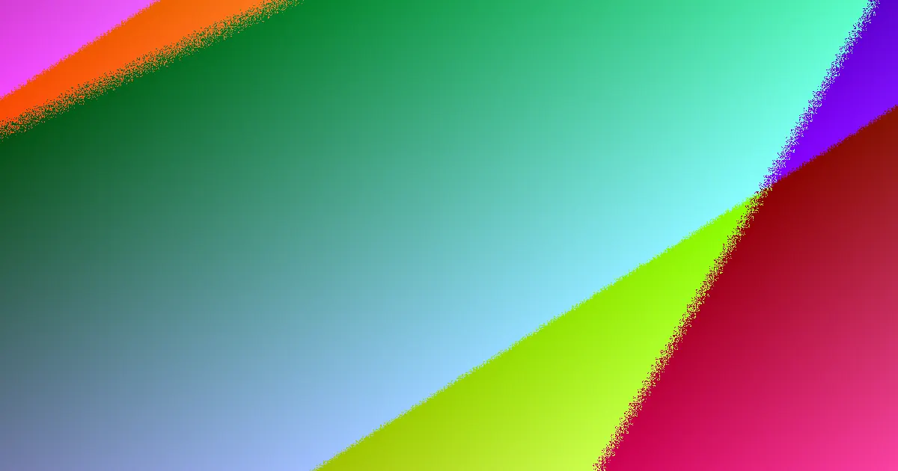

Budgeting for retaining walls in Gold Coast typically ranges from $250 to $800 per square metre, with timber sleepers being a more economical option compared to concrete, block, or stone. Approval considerations become crucial for walls exceeding 1.0 metre in height, situated within 1.5 metres of another structure, or subject to surcharge loads. Engineered solutions often necessitate compliance with AS 4678, RPEQ Form 15 certification, and local council approval.
For local buyers, retaining walls gold coast myths understanding the key factors that influence their design, installation, and longevity.
Retaining Walls Gold Coast Myths Explained
When considering retaining walls in Gold Coast, the process typically begins with an assessment of site specifics, the wall's intended purpose, and any challenges related to access or drainage. A thorough site evaluation and a detailed, fixed-price written quote are essential. It's important to remember that the visible wall is only one component of the overall project. Costs associated with excavation, drainage systems, engineering, and obtaining necessary approvals can significantly impact the final price. To facilitate an accurate assessment, providing details such as the suburb or postcode, the approximate height and length of the proposed wall, the reason for its construction, and information about any nearby driveways, boundaries, buildings, or existing walls is highly beneficial. A comprehensive quote should clearly delineate costs for materials, drainage, engineering, and approvals. Differentiating between requirements for garden edging, structural retaining, or replacing a failing wall is also crucial. Ensuring adequate site access for assessment prior to comparing quotes will lead to more accurate comparisons.
Choosing The Right Wall Type
The selection of materials for your retaining wall significantly influences its suitability for different site conditions and aesthetic preferences. Options commonly available include:
- Concrete sleepers: These are steel-reinforced concrete panels supported by galvanised steel posts, well-suited for the coastal and hinterland environments of the Gold Coast.
- Timber sleeper walls: Constructed from H4 treated hardwood or pine, these are ideal for garden terraces and low boundary retaining walls.
- Besser block walls: These are often used for taller, engineered retaining structures and can be rendered for a finished look.
- Rock and boulder walls: Utilising natural sandstone and boulders, these offer a rugged, free-draining aesthetic, often battered back for stability.
- Gabion walls: These consist of rock-filled wire baskets, providing a durable and erosion-resistant solution for sloping sites.
Each type addresses different functional and aesthetic requirements, from low garden terraces to substantial walls adjacent to driveways or boundaries. The choice should align with the specific demands of the site and the intended load-bearing capacity.
Drainage: A Critical Component
Effective drainage is fundamental to the longevity and structural integrity of any retaining wall, particularly in the varied soil conditions found on the Gold Coast, including sandy, clay, and hinterland soils. Essential drainage elements typically include agricultural drainpipes (ag drain), gravel backfill, and geofabric. A quote that omits specific allowances for drainage is incomplete and may lead to future issues. It is vital to clarify where the collected water will be directed, the type of backfill material included, and how site-specific conditions might influence the drainage strategy. Factors such as waterfront locations, confined coastal sites, steep driveways, or sloping hinterland blocks can present unique challenges that must be addressed in the drainage plan. Confirming the inclusion of agi pipe, the quantity of gravel and geofabric, and how drainage requirements adapt to restricted access or the replacement of existing damaged walls are important considerations.
Approvals, Engineering, And Documentation
For retaining walls exceeding one metre in height or those supporting surcharge loads, compliance with Australian Standard AS 4678 is typically required. This often involves obtaining a Form 15 design certification from a Registered Professional Engineer of Queensland (RPEQ) and securing approval from the Gold Coast City Council. Council approval is generally mandated unless the wall is under 1.0 metre high and situated more than 1.5 metres away from any building or another retaining wall. However, even shorter walls near other structures warrant careful assessment. For taller, engineered systems, the quote should clearly outline how design, certification, and approval costs are integrated. Inquiring about who is responsible for arranging the engineering, whether approval fees are itemised, and what documentation will be provided upon project completion is essential for transparency and compliance.
Who This Guide Is For
This guide is intended for Gold Coast homeowners, property investors, and managers who are planning the construction of a new retaining wall, need to replace an existing damaged wall, or are seeking to understand the variations in quotes received from different providers. The advice is applicable across various settings, including coastal, waterfront, planned estates, and hinterland areas. The core considerations, load, water management, site access, and documentation, remain consistent regardless of the specific location. For instance, suburbs like Southport, Surfers Paradise, and Broadbeach present unique challenges due to their proximity to water and dense development, while areas such as Burleigh Heads, Mudgeeraba, Tamborine Mountain, and Springbrook may involve considerations related to sloping terrain, specific soil types (like red volcanic or basalt soils), and higher rainfall.
- Gather Site Information. Note the suburb, approximate wall height and length, reason for the wall, and proximity to buildings or other structures.
- Identify Wall Type. Consider options like concrete sleepers, timber, besser block, rock, or gabions based on site needs and aesthetics.
- Clarify Drainage. Ensure the quote includes allowances for agi pipe, gravel, and geofabric, and understand where water will be discharged.
- Verify Engineering & Approvals. Confirm if a Form 15 certificate and council approval are required and included in the quote, especially for walls over 1m.
- Review the Quote Carefully. Check that materials, drainage, engineering, and approval costs are itemised before accepting the final price.
Common questions
What is the typical cost for retaining walls in Gold Coast? The budget guide for retaining walls in Gold Coast ranges from approximately $250 to $800 per square metre. Timber sleeper walls are generally more affordable, while concrete, block, and stone options tend to be at the higher end of this range.
When are council approvals needed for retaining walls? Council approval is generally required for retaining walls that exceed 1.0 metre in height, or if the wall is supporting a surcharge load. Approval is also typically needed if the wall is located within 1.5 metres of a building or another retaining wall.
Why is drainage so important for retaining walls? Proper drainage is critical to prevent structural failure caused by water pressure buildup behind the wall, especially in Gold Coast's varied soil conditions. It involves elements like agi pipes, gravel, and geofabric to manage water effectively.
retaining walls gold coast and practical considerations.